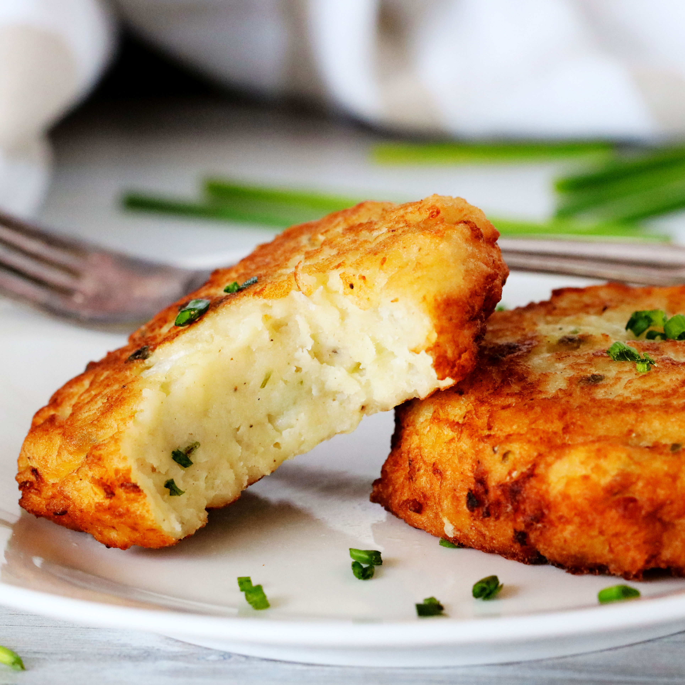

Potato Pockets

Description
A dish found in both the United States and Germany. In German they are called "Kartoffeltaschen" which translates to "potato pockets." Potato pockets are best served with a fresh, green salad.
Ingredients
- 600g Potatoes (Idaho, Russel, or Gold)
- 1 Onion
- 1 tbsp parsley (chopped)
- 2 tbsp Gouda Cheese (shredded)
- 2 Eggs (small, or 1 large egg)
- some Salt
- some Pepper
- some Nutmeg
- 1 Carrot
- 1 Bell Pepper (red)
- 3 tbsp Oil
- 1 pckg Cream Cheese
- some Herbs and Spices that you like
Steps
- Boil the potatoes in thir skin for about 20min or until cooked through.
- In the meantime, chop the onion.
- When the potatoes are cooked, remove the skin and mash them while still hot.
- Let the mashed potatoes cool completely before you add the next ingredients!
- Add the cheese, egg(s), onion, and parsley to the cooled potatoes. Then use salt, pepper, and nutmeg to taste. Set aside.
1 Onion, 1 tbsp parsley, 2 tbsp Gouda Cheese, some Salt, some Pepper, some Nutmeg, 2 Eggs
- Peel the carrot. Dice the carrot and the bellpepper very small.
- Fry the carrot and bell pepper in 1 tbsp. oil until soft. Then mix it with the cream cheese. Add salt and pepper if needed, add the spices and herbs of your choice and mix well.
- Divide the potatoes dough into 6 portions of the same size. Shape each portion into a ball, then flatten it into a large circle.
Add some of the cream cheese mixture for the filling, flip one side over and press together at the rim, creating a half-circle.
- Heat the remaining 2 tbsp oil and fry the potato pockets from both sides.
- Remove from the pan when both sides are golden brown, then serve with a fresh salad.